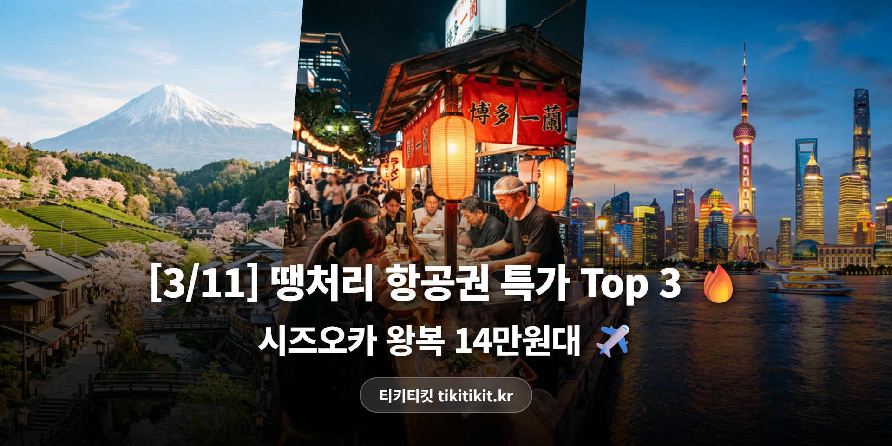

[3/11] 땡처리 항공권 특가 TOP 3 | 시즈오카 14만원, 후쿠오카 18만원 ✈️
혹시 다음 여행지 고민 중이신가요?
오늘 올라온 특가 중에
끌리는 게 있을지도 몰라요.
한번 볼까요? 👇
🏆 3/11 추천 특가 TOP3
🥇 1위
부산 ↔ 시즈오카 (일본)
에어부산 · 3/30(월)~4/1(수) · 2박 3일
140,000원

후지산이 보이는 온천의 도시 ♨️
벚꽃 시즌 녹차밭 산책까지, 숨겨진 보석 같은 곳!
🥈 2위
부산 ↔ 후쿠오카 (일본)
제주항공 · 3/18(화)~3/21(금) · 3박 4일
188,000원

부산에서 비행기로 딱 1시간 ✈️
하카타 라멘 · 모츠나베 · 야타이 거리까지, 먹방 성지! 🍜
🥉 3위
인천 ↔ 상하이 (중국)
중국남방항공 · 3/18(화)~3/21(금) · 3박 4일
223,700원

와이탄 야경에서 동방명주까지 🌃
※ 유류할증료/텍스 포함 왕복 총액 기준
※ 좌석이 빠지면 가격이 바뀌거나 사라질 수 있어요.
💡 에디터 픽 : 3위 인천-상하이
인천-상하이 왕복 223,700원!
중국남방항공 직항으로
3박 4일 알찬 일정입니다.
와이탄 야경은 꼭 밤에 가보세요 🌃
동방명주 전망대에서 보는 상하이 전경은
사진으로 담기 아까울 정도!
난징루 보행거리에서 쇼핑하고
샤오롱바오 맛집 투어까지 🥟
왕복 22만3,700원에
이 정도 대도시 여행이면
가성비 최고 아닐까요?
무비자 15일 체류 가능하니
여권만 있으면 바로 출발!
📌 인천 출발은 뭐가 있을까?
이번 인천 출발 추천 라인업!

✈️ 상하이 223,700원 (중국남방항공)
3/18~3/21 · 3박 4일 와이탄 야경 여행!

✈️ 괌 199,000원 (진에어)
3/28~4/1 · 투명한 바다에서 스노클링 🤿

✈️ 푸켓 199,000원 (아시아나항공)
야시장 먹방 + 타이 마사지 콤보 🌚
✨ 이번 주 항공권 꿀팁
🗻 시즈오카 TIP: 후지산을 가장 가까이서 볼 수 있는 도시! 온천과 녹차의 고장입니다.
🍜 후쿠오카는 부산에서 1시간! 라멘·모츠나베·야타이 거리까지, 먹방 여행의 성지.
🇨🇳 상하이 꿀팁: 지하철이 잘 되어 있어 택시 없이도 OK! 알리페이 앱 미리 설치하면 결제가 편해요.
슬슬 봄바람이 부는 계절,
어디론가 훌쩍 떠나고 싶은 마음이 드신다면
오늘 소개한 노선 한번 확인해보세요.
내일이면 사라질 수도 있는 가격이니까요 😊
#땡처리항공권 #특가항공권 #항공권싸게사는법 #항공권최저가 #해외여행꿀팁 #티키티킷 #3월항공권 #3월해외여행 #시즈오카여행 #후쿠오카여행 #상하이여행 #부산출발항공권 #인천출발항공권